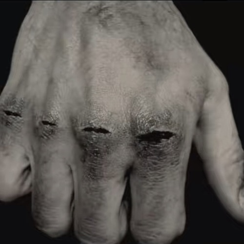

skip to content
EmptySkies
+1
emptyabovebelow
0
surface
−1
released
−3
links
Baltimore
39.29°N 76.61°W
↑ the surface
05
NoHand2Hold
no hand 2 hold so i put racks in my jeans..
play
pause
on SoundCloud ↗
no.
05 / 05
genre
rap
uploaded
09.12.26 · 20:13 UTC
since
—
length
3:45
depth
−1.2

fig. 05 — cover
holy
— a listener, on SoundCloud
insane bro
— a listener, on SoundCloud
↑ the surface
↓ 04 DeathAlliWant